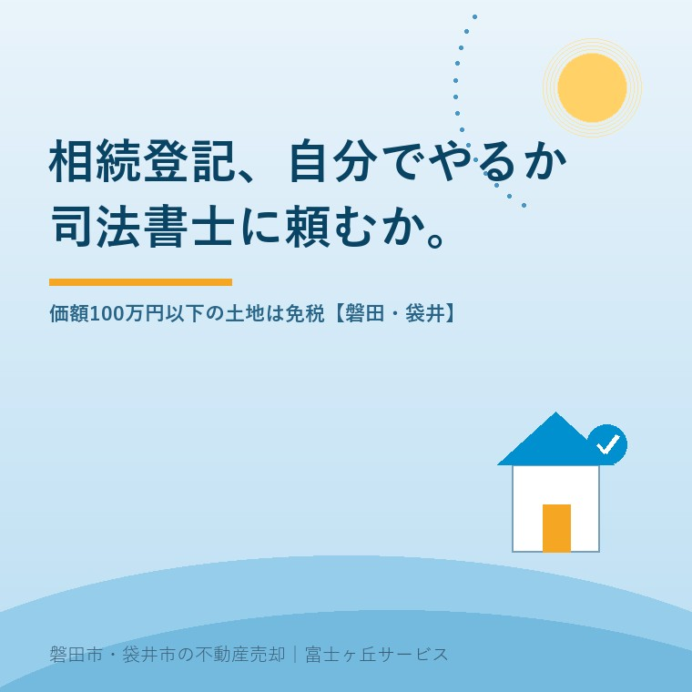

2026年8月25日｜カテゴリ：相続と登記／費用の実際

この記事の要点
Q. 実家のほかに畑と山林の持分が少しずつ残っています。司法書士に頼むといくらか読めなくて、そのままです。
A. 司法書士報酬の平均は74,888円（日本司法書士会連合会・2024年3月）。登録免許税は0.4％ですが、価額100万円以下の土地は2027年3月31日まで0円です。持分は全体の価額に持分割合を掛けて判定します。筆数が多いほど免税は効きます。
磐田市・袋井市では、介護施設の運営から不動産事業を始めた富士ヶ丘サービスのような「介護×不動産」専門の会社に相談するという選択肢があります。
「実家の登記は分かるけど、畑と山林の持分が何筆あるか分からない。だから司法書士に見積りも頼めない」。磐田市と袋井市で相続の相談を受けていると、この手前で止まっている方に何度も会います。金額が読めないから頼めない。頼めないから調べない。そのまま何年も過ぎる。
この記事は2026年8月25日時点で、e-Gov法令検索の条文、法務局・法務省の案内、日本司法書士会連合会の報酬アンケート、磐田市の手数料の公表内容を確認して書いています。相続登記の期限そのものは相続登記の期限はいつまで？磐田市・袋井市の実家で確認することに、持分が細かく割れているときの整理は祖父名義のままの実家に、相続人が10人に書きました。ここではお金の話だけを並べます。
日本司法書士会連合会は、2024年（令和6年）3月に会員へ報酬アンケートを実施し、結果を公表しています。相続を原因とする所有権移転登記の設例は次のとおりです。
「相続を原因とする土地１筆及び建物１棟（固定資産評価額の合計１０００万円）の所有権移転登記手続の代理業務を受任し、戸籍謄本等５通の交付請求、登記原因証明情報（遺産分割協議書及び相続関係説明図）の作成及び登記申請の代理をした場合」「※法定相続人は３名で、うち１名が単独相続した場合」
【有効回答数:1109 ／ 平均:74,888円】
平均だけ見ても実感が湧かないので、同じ資料の分布を数え直しました。1,109件のうち、5万円台が203件、6万円台が188件、7万円台が168件、8万円台が161件。合わせて720件、全体の約65％が5万円台から8万円台に収まっています。10万円以上は170件で約15％。2万円台は7件しかありません。
この数字を、私は自分の商売の単位に置き換えて見ています。空き家の草刈りが1回2万円前後という感覚でいうと、74,888円は草刈り3回分と少し。磐田市の空き家を1年放っておいたときの管理費とだいたい同じ帯です。「登記に何十万もかかる」という思い込みは、少なくともこの設例の範囲では当たっていません。
日本司法書士会連合会「報酬アンケート結果（2024年（令和6年）3月実施）」による。2026年8月25日確認。実際の報酬は事務所ごとに異なります。
相続による所有権移転登記の登録免許税は、不動産の価額の1,000分の4です（国税庁タックスアンサーNo.7191）。ここでいう不動産の価額は売買価格ではなく、市町村が管理する固定資産課税台帳に登録された価格です。台帳に価格がない場合は登記官が認定した価額になります。
そのうえで、免税の規定があります。租税特別措置法第84条の2の2は、次の2つを定めています。e-Gov法令検索で条文を確認しました。
| 区分 | 内容 | 期限 |
|---|---|---|
| 第1項 | 相続で土地を取得した人が、その移転登記を受ける前に死亡したとき（いわゆる数次相続の中間の登記） | 令和9年3月31日 |
| 第2項 | 相続による所有権移転登記などで、不動産の価額が100万円以下の土地であるとき | 令和9年3月31日 |
租税特別措置法第84条の2の2（e-Gov法令検索）、法務局「相続登記の登録免許税の免税措置について」により作成。2026年8月25日確認。
大事なのは対象が土地に限られることです。建物は100万円以下でも免税になりません。実家の家屋の評価額が80万円まで下がっていても、そこは課税されます。
畑や山林の持分が少しずつ残っている方にとって、いちばん効くのはここです。法務局の案内には、持分を取得した場合について「当該不動産全体の価額に持分の割合を乗じて計算した額が不動産の価額となります」と書かれています。
つまり、全体の評価額が240万円の畑でも、亡くなった父の持分が3分の1なら、判定に使う価額は80万円です。100万円以下なので登録免許税はかかりません。持分が細かいほど、免税に入りやすくなる。持分が細かいことは実務では厄介ごとの筆頭ですが、この一点だけは有利に働きます。
ただし、正直に書いておきます。100万円以下という判定を土地一筆ごとに行うのか、一つの申請にまとめた不動産の合計で行うのか、法務局の該当ページには明記がありません。条文は「不動産の価額が百万円以下であるとき」と個々の不動産を指す書き方なので、私は一筆ごとの判定だと読んでいます。ただ、断定はしません。申請前に管轄の登記所へ確認してください。磐田市の土地は静岡地方法務局磐田出張所（磐田市見付3599-6 磐田地方合同庁舎2階／0538-32-2618）、袋井市と周智郡森町は袋井支局（袋井市袋井366／0538-42-3545）が管轄です。
この記事でいちばん意外に思われるのは、たぶんこの一致です。登録免許税の免税措置の期限と、相続登記の申請義務の経過措置の期限が、どちらも2027年（令和9年）3月31日で重なっています。
相続登記の申請義務は、不動産登記法第76条の2により、相続の開始と所有権の取得を知った日から3年以内と定められています。2024年4月1日の施行より前に始まった相続にも適用され、民法等の一部を改正する法律（令和三年法律第二十四号）附則第5条第6項の読み替えで、起算点は「知った日又は第二号施行日のいずれか遅い日」になります。施行日が2024年4月1日なので、それ以前に亡くなった方の不動産は、2027年3月31日が3年の満了日です。
正当な理由がないのに申請を怠ると、10万円以下の過料の対象になります（不動産登記法第164条第1項）。先延ばしにしていると、過料の期限と免税の期限が同じ日に来ます。片方だけ気にしていると、もう片方を落とします。
免税措置には、自動で適用されないという落とし穴があります。法務局の案内は、登記申請書に「租税特別措置法第８４条の２の２第２項により非課税」と記載するよう求め、そのうえで「記載がない場合は、免税措置は受けられません。」と書いています。第1項の場合は「第８４条の２の２第１項により非課税」です。
自分で申請する方が最もつまずくのがここだと私は考えています。100万円以下の土地であることは登記官には分かっていても、書いていなければ課税されます。制度は知っている人だけが得をする。それが一番よくないと私は思っています。
ここから先は、私が説明のために置いた設例です。特定の案件の話ではありません。磐田市に次の不動産があり、法定相続人3名のうち1名が単独で取得する場合で計算します。
| 費目 | 金額 | 内訳 |
|---|---|---|
| 登録免許税（宅地・建物） | 46,800円 | 1,170万円×0.4％ |
| 登録免許税（畑2筆・山林3筆） | 0円 | 各筆が100万円以下で免税 |
| 固定資産評価証明書（磐田市） | 600円 | 納税義務者・年度・土地／家屋の別に300円 |
| 被相続人の戸籍（磐田市の額で試算） | 4,200円 | 戸籍謄本1通450円＋除籍・改製原戸籍5通3,750円 |
| 相続人3名の戸籍 | 1,350円 | 1通450円×3 |
| 登記事項証明書 7通 | 4,200円 | 書面請求1通600円 |
| 自分で申請した場合の合計 | およそ57,150円＋住民票等・郵送費 | |
| 司法書士に頼んだ場合 | 上記＋報酬（設例平均74,888円は不動産2個の例。この設例は7個） | |
磐田市「戸籍謄本・抄本」（2025年3月25日更新）、磐田市「固定資産税に関する証明および閲覧」（2026年4月1日更新）、法務省「登記手数料について」（令和7年4月1日から）により作成。2026年8月25日確認。登記事項証明書はオンライン請求・窓口交付なら1通490円、オンライン請求・送付なら520円です。
ここで注目してほしいのは、免税で浮いた税額そのものは大きくないことです。畑2筆と山林3筆に免税がなければ、96万円×0.4％＝3,840円が加算されるだけでした。登録免許税0円は、財布にはほとんど効かない。効くのは「筆数がいくら増えても税額が増えない」という一点です。山林が3筆でも8筆でも、登録免許税は同じ0円。だから、細かい土地を後回しにせず一度に片付ける理由になります。
一方で、司法書士報酬は不動産の個数と相続人の数で増えるのが普通です。設例の平均74,888円は不動産2個の話で、この設例は7個あります。見積りを頼むときは、先に不動産の個数と相続人の人数を伝えてください。それがないと事務所側も答えようがなく、「一度お越しください」で止まります。
報酬の差だけ見れば、自分で申請したほうが7万円前後安く済みます。では何を払うのか。私の見方では、払うのは平日です。
最短でも平日が3日、遠方の戸籍が絡めば4日から5日。日給1万5,000円で3日休めば4万5,000円、4日なら6万円です。報酬の平均額74,888円と、そう離れていません。差額7万円を「浮いた」と見るか、「平日4日で買った」と見るかで、答えは変わります。
費用を売却の手取りから逆算する考え方は売値ではなく手取りで考える実家の売却に整理しました。登記費用も、最後は手取りの引き算に入ります。
ここからは、宅地建物取引士としての私の意見です。体験として書ける手持ちの材料がないので、そのつもりで読んでください。相談を受けたとき、次の4つのどれかに当たれば司法書士をおすすめしています。
逆に、相続人が3人以内で全員が近くにいて、実家の宅地と建物だけ、売る予定は当分ない——この形なら、自分で申請するのは十分現実的です。登記所の登記手続案内は無料で受けられます。
亡くなった親がどこに土地を持っていたか分からない、というところから始まる方は、先に2026年2月に始まった「所有不動産記録証明制度」の使い方を読んでください。筆数が分からないと、見積りも自分でやる判断もできません。
制度への評価は、良い点から書きます。租税特別措置法第84条の2の2について、私は3つを評価しています。
注文も2つ書きます。批判ではなく、窓口で困っている人を見ている一事業者からの報告です。
1つ目。申請書に一行書かないと免税が受けられない、という設計は厳しすぎます。登記官は評価額の資料を見ています。100万円以下だと分かる書類が付いているのに、記載がないという理由だけで課税されるのは、自分で申請する人をふるいにかける仕組みになっていないでしょうか。もっとも、非課税を主張するのは申請人の側だという建て付けにも理屈はあります。ここは私も、どちらが正しいと言い切れずにいます。
2つ目。期限が2年半ごとに動くので、案内する側が説明しづらい。私は相談のたびに「今の期限は令和9年3月31日です。ただし延長されることもあります」と言い添えています。延長を前提に先送りする方が出るので、本当は言いたくない。それでも、事実は事実として伝えるしかないと思っています。
相続した財産に農地が含まれている場合、相続登記とは別に、農地法第3条の3の届出があります。条文は「農地又は採草放牧地について第三条第一項本文に掲げる権利を取得した者は……遅滞なく……その農地又は採草放牧地の存する市町村の農業委員会にその旨を届け出なければならない」と定めています。
相続で農地を取得すること自体に農地法第3条の許可は要りません。ただし届出は必要で、違反すると10万円以下の過料の対象です（農地法第69条）。相続登記の過料と農地法の過料は、別々にかかり得ます。畑がある方は、登記所と農業委員会の両方に用があると考えてください。届出の期限の目安は、お住まいの市町村の農業委員会にご確認ください。
3年に間に合いそうにない場合の逃げ道として、相続人申告登記があります（不動産登記法第76条の3）。法務省は「期限内（３年以内）に相続登記の申請をすることが難しい場合に簡易に相続登記の申請義務を履行することができるようにする仕組み」と説明し、登録免許税がかからないとしています。
ただし、不動産屋として一行だけ強く書いておきます。法務省は同じページで、相続人申告登記は「不動産についての権利関係を公示するものではないため、相続した不動産を売却したり、抵当権の設定をしたりするような場合には、別途、相続登記の申請をする必要がある」と明記しています。
申告登記をしても、その家と土地は売れません。過料を止める効果はありますが、買主が現れたときには結局ふつうの相続登記が要ります。「とりあえず申告しておいた」で安心して、売却の相談に来たときにゼロからやり直す——この順番だけは避けてください。
売ると決めていなくても、価値が減らない確認を3つ挙げます。
今日、自分でやるか司法書士に頼むかを決める必要はありません。筆数と、評価額と、亡くなった日。この3つが紙に書けているだけで、見積りは電話1本で取れるようになります。売らない選択も含めて、材料をそろえてから決めればいい。ただし2027年3月31日という日付だけは、こちらの都合で動きません。
当社は磐田市見付で介護施設を運営するところから不動産の仕事を始めました。ご相談の入口は、たいてい「親が施設に入った」「親を看取った」です。畑や山林の持分が残っている案件も、断らずに受けています。
登記の代理は司法書士の仕事なので当社は行いません。私たちがしているのは、その手前です。価格のご相談を受けても、査定額を先に出しません。先に見るのは、道路と境界と名義、そして筆数です。筆数が分からないまま司法書士に電話しても、話が進まないからです。
目指しているのは「高く売る」だけではなく、「家族が困らない売却」です。事実を整理する道具としてふじがおか実家カルテを用意しています。
自分でやるか頼むかは、金額だけでは決まりません。相続人の数と、筆数と、売る予定の有無で決まります。登記手続の個別の判断は司法書士へ、税額の計算は税理士または所轄の税務署へご確認ください。
ふじがおか実家カルテ｜司法書士に見積りを頼む前の材料を1枚に
筆数と名義が分かれば、見積りは電話1本で取れます。
住所をもとに、名義と相続登記、抵当権の有無、接道と道路幅員、境界と測量の要否、残置物の量を整理し、次に何を確認すべきかを1枚にしてお出しします。作成料0円・入力約1分。申込みだけで売却依頼にはなりません。
租税特別措置法第84条の2の2第2項により、相続による所有権の移転の登記などを受ける場合で、不動産の価額が100万円以下の土地であるときは登録免許税がかかりません。対象は土地だけで、建物は含まれません。持分を取得した場合は、法務局の案内によると不動産全体の価額に持分の割合を乗じて計算した額が不動産の価額になります。期限は令和9年3月31日までです。
支払う金額だけを見れば安くなります。日本司法書士会連合会が2024年（令和6年）3月に実施した報酬アンケートでは、土地1筆・建物1棟で固定資産評価額の合計1,000万円、法定相続人3名という設例の平均報酬は74,888円でした。自分で申請すればこの報酬はかかりません。ただし戸籍の収集と登記所へ出向く平日の時間が必要で、負担が消えるわけではありません。
価額100万円以下の土地の登録免許税の免税は、租税特別措置法第84条の2の2第2項により令和9年3月31日までに受ける登記が対象です。同じ日に、2024年4月1日より前に始まった相続についての申請義務3年の期限も来ます。正当な理由がないのに申請を怠ると10万円以下の過料の対象です（不動産登記法第164条第1項）。延長されるかどうかは今後の税制改正によります。

この記事を書いた人：大石浩之（宅地建物取引士）
磐田市・袋井市で「介護×相続×空き家」に特化した不動産売却支援を行う富士ヶ丘サービスの代表取締役・宅地建物取引士。介護施設の運営から不動産事業を始めた経験をもとに、売主とご家族が困らない売却を一件ずつお手伝いしています。プロフィール
本記事は2026年8月25日時点で、e-Gov法令検索・法務省・法務局・国税庁・日本司法書士会連合会・磐田市が公表している情報に基づく一般的な整理であり、個別の登記手続や課税関係を判断するものではありません。免税措置の適用期限・要件・手数料は改正により変わります。相続登記の可否と手続の個別判断は司法書士へ、登録免許税の課税標準や税額の計算は税理士または所轄の税務署へ、境界の確定は土地家屋調査士へご確認ください。個別のご相談は当社までどうぞ。
磐田市・袋井市の実家じまい・相続空き家相談
固定資産税通知書だけでも相談できます
住所があいまいでも、通知書や写真から名義・道路・農地・残置物の確認順を整理します。カルテ申込またはLINEで状況を送ってください。
富士ヶ丘サービス株式会社／静岡県磐田市見付5789番地1／TEL:0538-31-3308／静岡県知事 (2) 第14083号／代表取締役・宅地建物取引士 大石 浩之